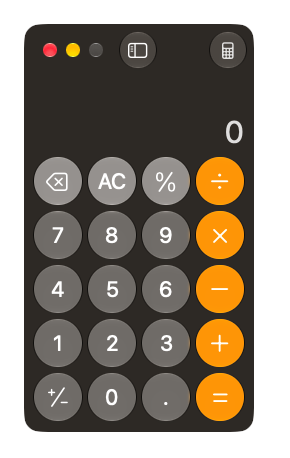

Press ⌘ ⇧ Space and Jumpr puts a short label, usually two letters, on every clickable element on every display: buttons, links, Dock icons, menu bar icons, menus and notifications. Type the letters and Jumpr clicks that element. Labels take about a tenth of a second to appear.
Jumpr is free and open source, from BaggaDonuts LLC. It needs macOS 15 or later.

Start here
- Download Jumpr.zip and move Jumpr to your Applications folder.
- Open Jumpr and grant it the Accessibility permission.
- Press ⌘ ⇧ Space, then type the letters of a label.
Getting started walks through each step.
Find your way
| Page | What it covers |
|---|---|
| Labels and keys | Picking a label, and the keys that work while labels are up |
| Kinds of click | Right-click, ⌘-click, double-click and ⇧-click |
| Persistent mode | Keeping labels up for a run of clicks |
| Scrolling | Scrolling any area from the keyboard |
| The panel | The settings under the menu bar icon |
| Known limits | What Jumpr cannot label or click yet |